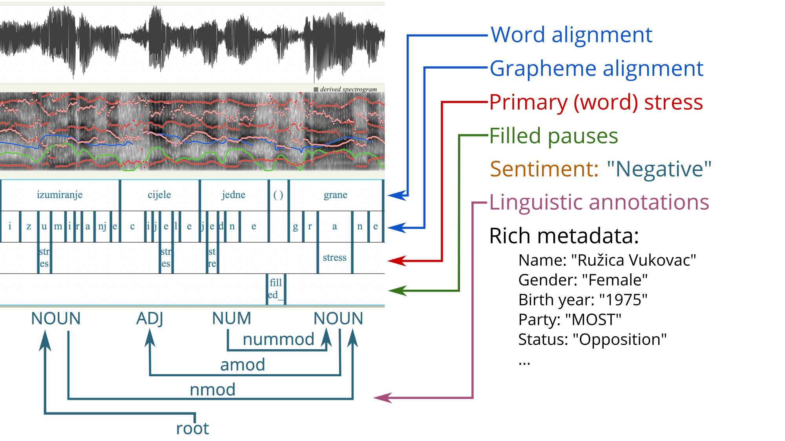
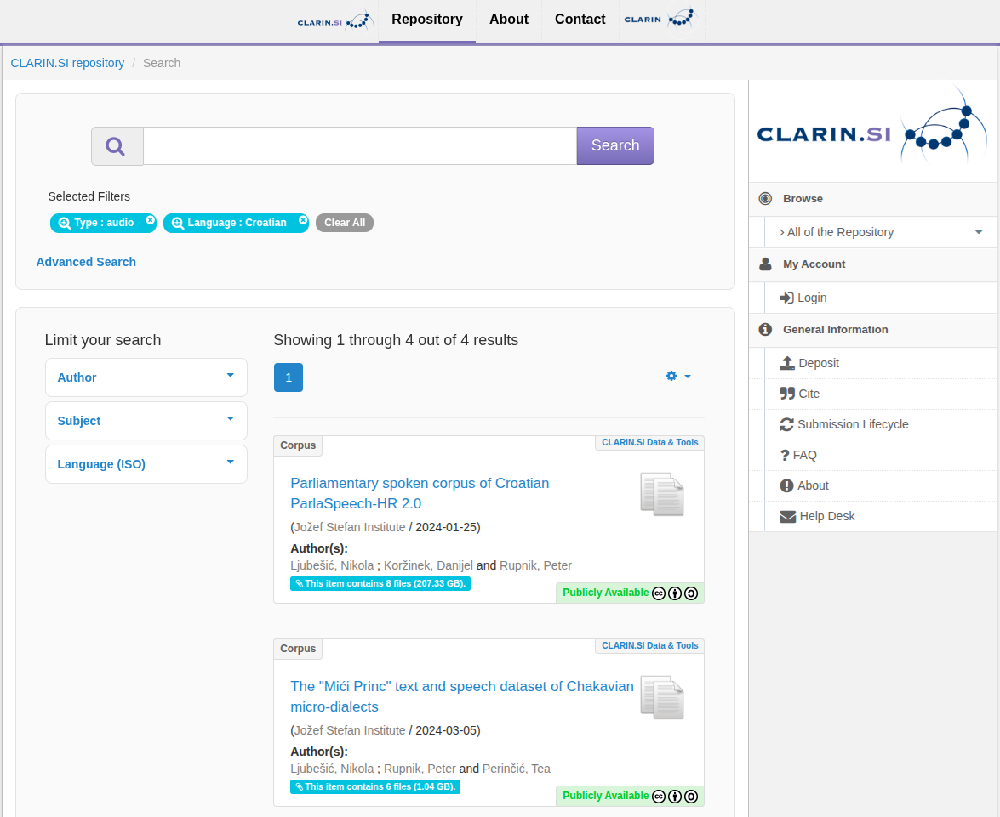

Imagine you are a linguist at a university in Zagreb. You want to build a voice assistant that understands Croatian — something that could help elderly speakers, power accessibility tools for deaf and hard-of-hearing users, or simply bring your language into the modern AI era. You go looking for the open, freely available recordings of Croatian speech that your model needs to learn from.
You find 35 hours.
For comparison, German researchers have access to over 2,600 hours spread across 61 separate corpora. English has so much data that a single unlabelled collection called Libri-Light contains 60,000 hours of audio that nobody has even bothered to transcribe yet.
This is the quiet crisis at the heart of speech technology: not a shortage of data in the abstract, but a profound and growing imbalance in whose language gets recorded, annotated, and shared.
Teaching a Machine to Listen
Before we get to the crisis, it helps to understand what a speech corpus actually is and why it matters so much.
A speech corpus is, at its simplest, a large organised collection of recordings of people talking, paired with accurate written transcriptions of what they said. Modern speech AI learns by consuming these recordings in enormous quantities. The more data a model sees, the better it gets. Show it a thousand hours of Croatian speech and it starts to understand Croatian. Show it a dozen and it mostly guesses.
But what kind of speech gets collected matters just as much as how much. There is a world of difference between a person reading a passage aloud from a book, a politician delivering a prepared speech in parliament, and two friends arguing over coffee. Researchers treat these as distinct domains, and models trained in one domain often stumble badly in another.
A system trained on parliamentary Croatian and then tested on a phone call between two friends is not encountering a harder version of the same problem. It is encountering a different problem entirely. The hesitations, the unfinished sentences, the dialect words — none of that was in its training data.
The field has exploded in scale over the past decade. Early benchmarks from the 1990s offered a few hundred hours of telephone English. Today, a single dataset called YODAS has amassed over 500,000 hours of multilingual speech scraped from YouTube. A 2024 European project called MOSEL catalogued nearly a million hours of speech data covering the official languages of the EU. Crowdsourced efforts like Common Voice take a different approach, relying on volunteers to record and validate speech across over 100 languages, including low-resource Slavic varieties — though coverage remains uneven. A million hours is more audio than a person could listen to in a hundred lifetimes. Yet inside that abundance, the gaps are stark.
The Price of a Human Ear
"Creating 880 hours of carefully transcribed Slovenian speech required more than 20,000 person-hours and roughly €600,000."
That figure comes from the ARTUR project, one of the largest manually transcribed spoken resources for any South Slavic language. People listening, typing, checking, correcting, listening again. For a major tech company, €600,000 is a rounding error. For a university linguistics department in Ljubljana or Belgrade, it is an impossible sum.
This is precisely why the data gap persists. It is not that Croatian or Serbian or Bulgarian are somehow harder to record. It is that the communities with the most to gain from this technology have the least capacity to fund the infrastructure it requires.
The good news is that this bottleneck is finally cracking open, thanks to a generation of AI models that can do automatically what once required thousands of hours of human effort.
When AI Learns to Transcribe Itself
In 2023, OpenAI released a model called Whisper, trained on 680,000 hours of audio from across the internet. Unlike earlier speech models that needed carefully labelled training data, Whisper was trained on messy, imperfect, web-scraped audio at massive scale. It emerged able to transcribe dozens of languages with remarkable accuracy, entirely for free, with no human annotation required.
The effect on corpus building was immediate. Projects that previously would have required years of manual work could now generate rough transcripts automatically and spend human effort only on checking the most important sections. A European parliamentary speech project called EuroSpeech used this approach to assemble over 61,000 hours of speech from 22 national parliaments. Another called Granary reached nearly 643,000 hours across 25 languages.
But automatic transcription is only the beginning. Modern enrichment pipelines layer on additional information automatically: who is speaking (speaker diarisation), where exactly each word falls in the audio down to the millisecond (forced alignment), whether the speaker hesitated or said "uhh" (disfluency detection), and even what emotional tone the speech carries (sentiment annotation). Resources like ParlaSpeech, covering Croatian, Czech, Polish, and Serbian parliamentary speech across 6,000 hours, now offer five of these annotation layers simultaneously, all generated automatically at a quality that rivals human annotators.
The bottleneck in corpus creation has shifted. The hard part is no longer transcribing audio. It is deciding which audio is worth transcribing in the first place, and making sure the pipeline quality holds up across languages where the underlying models were never designed to work.

A Map of Who Gets Left Behind
The data is clearest when you look at what is registered in CLARIN, the main European research infrastructure for language resources. The distribution of spoken language corpora reads less like a scientific landscape and more like a map of historical investment in language technology.
Finnish researchers have over 12,700 hours, largely thanks to a single dialect collection. German has 61 separate corpora. Then the numbers fall off a cliff. Serbian: 51 hours. Polish: 38 hours. Croatian: 35 hours. And Slovak, a living language spoken by five million people, does not appear in the international inventory at all. Controlled evaluation benchmarks like FLEURS cover 102 languages in parallel, but their Slavic test sets remain thin, restricted to read speech, and too small to reveal how models truly perform on everyday language.
This is not just an inconvenience for linguists. The same data gap that makes it hard to study Serbian or Polish or Croatian or Slovak syntax, also makes it hard to build voice assistants, live captions for deaf viewers, speech therapy applications, and accessibility tools for people with disabilities who rely on voice control. The languages spoken by communities that most need catch-up investment in digital infrastructure are precisely the ones for which that investment has been hardest to attract.
Beyond Parliament: The Missing Conversations
There is a second, subtler gap that even the largest modern datasets do not fix: almost all of the audio that has been collected comes from formal settings. Read audiobooks. Parliamentary debates. Prompted recordings in quiet studios. These are the domains where data is easiest to collect at scale and cheapest to transcribe.
What is almost entirely missing is people just talking. The hesitations and interruptions and sentence fragments of everyday conversation. The way language sounds when nobody is performing for a microphone. The way a grandmother speaks to her grandchildren, the way colleagues argue over lunch, the way teenagers drop syllables that no dictionary would recognise. Resources like the Slovenian GOS corpus were meticulously designed to capture exactly this kind of authentic interaction, balancing recording types across public, private, and educational settings. But GOS covers one language and 120 hours. Against the million-hour backdrop of parliamentary and audiobook data, genuinely spontaneous speech is a rounding error.
Dialectal speech barely exists in open collections at all. Standard-language models often simply fail on regional accents, and for many smaller Slavic varieties, no open dialectal corpus exists to train or test on. The domain and dialect gaps compound the language gap: even a researcher who manages to find 50 hours of Croatian audio will find it is almost entirely from parliament, leaving conversational and dialectal Croatian essentially unmapped.

What Would Actually Help
The path forward is not mysterious. It requires spontaneous speech collection for under-resourced Slavic languages, moving beyond parliamentary proceedings to invest in conversational, dialectal, broadcast, and educational material. For languages such as Bulgarian, Slovak, and the South Slavic varieties, informal field recordings that capture everyday interactions are critically needed.
Standardised enrichment pipelines should be established and published openly alongside data, so that any institution can replicate what the best-resourced projects have built. Right now, most corpora only report how accurately they were transcribed, leaving all the richer annotation layers — including sentiment, disfluency markers, and syntactic structure — unverified and incomparable across datasets.
Interoperability across repositories deserves immediate attention. CLARIN, Hugging Face, and OpenSLR serve different communities but host overlapping resources. Cross-listing corpora and adopting standardised metadata would significantly improve discoverability and reduce duplicated effort.
Most fundamentally, the community should shift toward treating corpora as living resources with clear version histories rather than one-time snapshots that get published and forgotten. The most impactful projects, including ParlaMint now in its fifth release and ParlaSpeech in its third, have accumulated their value precisely because they kept adding languages, fixing errors, and deepening annotation over time.
The voice assistants of the next decade will be shaped by the data decisions being made today. Whether deaf users in Croatia get reliable live captions, whether a dialect speaker in rural Bulgaria can use voice search on their phone, whether a child with a speech impairment in Slovakia has access to the same therapy tools as their German counterpart — all of that depends, more than most people realise, on whether someone decided it was worth collecting 35 more hours of audio.